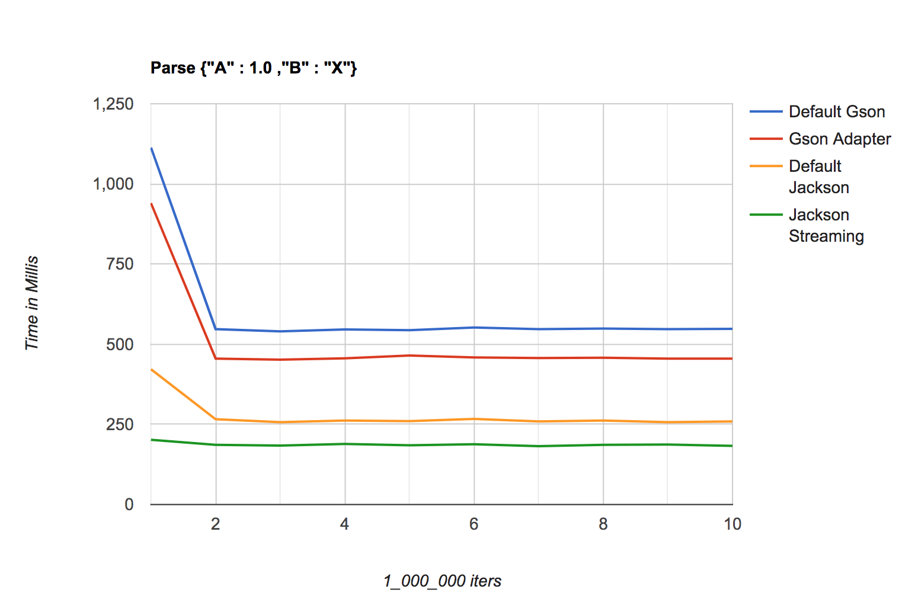

I want to parse a String into an internal JSON object (or equivalent) in Java. The usual libraries, Gson and Jackson, are way too slow for my needs (> 100us for each String to Json parse, according to my benchmarks). I know there are slightly faster libraries, but looking at the benchmarks online, the gains available will be small (less than an order of magnitude improvement).
If I know the format of the JSON in advance, is there a way I can parse it much faster? For example, I know the String will be a JSON of the format:
{
"A" : 1.0 ,
"B" : "X"
}
i.e., I know the two keys will be "A" and "B", and the values will be a double and a string, respectively. Given this advanced knowledge of the format, is there a library or some approach to parse the JSON much faster than usual?
If you know a JSON payload structure you can use Streaming API to read data. I created 4 different methods to read given JSON payload:
Gson class.JsonReader from Gson library.ObjectMapper from Jackson.JsonParser class.To make it comparable all these methods take JSON payload as String and return Pojo object which represents A and B properties. Below graph represents differences: 
As you can notice, Jackson's Streaming API is the fastest way to deserialise your JSON payload from these 4 approaches.
To generate above graph, below data were used:
1113 547 540 546 544 552 547 549 547 548 avg 603.3
940 455 452 456 465 459 457 458 455 455 avg 505.2
422 266 257 262 260 267 259 262 257 259 avg 277.1
202 186 184 189 185 188 182 186 187 183 avg 187.2
Benchmark code:
import com.fasterxml.jackson.annotation.JsonAutoDetect;
import com.fasterxml.jackson.annotation.PropertyAccessor;
import com.fasterxml.jackson.core.JsonFactory;
import com.fasterxml.jackson.core.JsonParser;
import com.fasterxml.jackson.databind.ObjectMapper;
import com.google.gson.Gson;
import com.google.gson.TypeAdapter;
import com.google.gson.stream.JsonReader;
import com.google.gson.stream.JsonWriter;
import java.io.IOException;
import java.time.Duration;
import java.util.ArrayList;
import java.util.List;
import java.util.stream.IntStream;
public class JsonApp {
private static final String json = "{\"A\" : 1.0 ,\"B\" : \"X\"}";
private static final int MAX = 1_000_000;
private static List<List<Duration>> values = new ArrayList<>();
static {
IntStream.range(0, 4).forEach(i -> values.add(new ArrayList<>()));
}
public static void main(String[] args) throws Exception {
for (int i = 0; i < 10; i++) {
int v = 0;
values.get(v++).add(defaultGson());
values.get(v++).add(gsonAdapter());
values.get(v++).add(defaultJackson());
values.get(v).add(jacksonJsonFactory());
}
values.forEach(list -> {
list.forEach(d -> System.out.print(d.toMillis() + " "));
System.out.println(" avg " + list.stream()
.mapToLong(Duration::toMillis)
.average().getAsDouble());
});
}
static Duration defaultGson() {
Gson gson = new Gson();
long start = System.nanoTime();
for (int i = MAX; i > 0; i--) {
gson.fromJson(json, Pojo.class);
}
return Duration.ofNanos(System.nanoTime() - start);
}
static Duration gsonAdapter() throws IOException {
PojoTypeAdapter adapter = new PojoTypeAdapter();
long start = System.nanoTime();
for (int i = MAX; i > 0; i--) {
adapter.fromJson(json);
}
return Duration.ofNanos(System.nanoTime() - start);
}
static Duration defaultJackson() throws IOException {
ObjectMapper mapper = new ObjectMapper();
mapper.setVisibility(PropertyAccessor.FIELD, JsonAutoDetect.Visibility.ANY);
long start = System.nanoTime();
for (int i = MAX; i > 0; i--) {
mapper.readValue(json, Pojo.class);
}
return Duration.ofNanos(System.nanoTime() - start);
}
static Duration jacksonJsonFactory() throws IOException {
JsonFactory jfactory = new JsonFactory();
long start = System.nanoTime();
for (int i = MAX; i > 0; i--) {
readPartially(jfactory);
}
return Duration.ofNanos(System.nanoTime() - start);
}
static Pojo readPartially(JsonFactory jfactory) throws IOException {
try (JsonParser parser = jfactory.createParser(json)) {
Pojo pojo = new Pojo();
parser.nextToken(); // skip START_OBJECT - {
parser.nextToken(); // skip A name
parser.nextToken();
pojo.A = parser.getDoubleValue();
parser.nextToken(); // skip B name
parser.nextToken();
pojo.B = parser.getValueAsString();
return pojo;
}
}
}
class PojoTypeAdapter extends TypeAdapter<Pojo> {
@Override
public void write(JsonWriter out, Pojo value) {
throw new IllegalStateException("Implement me!");
}
@Override
public Pojo read(JsonReader in) throws IOException {
if (in.peek() == com.google.gson.stream.JsonToken.NULL) {
in.nextNull();
return null;
}
Pojo pojo = new Pojo();
in.beginObject();
in.nextName();
pojo.A = in.nextDouble();
in.nextName();
pojo.B = in.nextString();
return pojo;
}
}
class Pojo {
double A;
String B;
@Override
public String toString() {
return "Pojo{" +
"A=" + A +
", B='" + B + '\'' +
'}';
}
}
Note: if you need really precise data try to create benchmark tests using excellent JMH package.
| 3 | This is excellent. Thanks for the effort you put into this answer. - ABC 10 Oct 2019 at 03:50 |
| 1 | I would second recommendation of using JMH since there are many things that can twist results -- in this case number of repetitions seems bit low to get to steady state, for example, and all runs are in same JVM. On plus side it should be very easy to add JVM via annotations and just use code above. - StaxMan 11 Oct 2019 at 18:29 |
@StaxMan, thanks for a comment. I just wanted to show a difference between 4 approaches and that Streaming API is more "stable" since first iteration than other ways. Of course, this test is not complete since only two libs and two ways are tested. But from other side, this test is easy to run and everyone should be able to test how it works on his computer with different JVM. I know, it is not perfect and precise as it could but I wanted to help somehow to make a good decision and which approach should be chosen. Hope, it will not be misleading for anyone. - Michał Ziober 11 Oct 2019 at 19:26 |
|
| 1 | @MichałZiober totally, and I noticed (after starting to write a comment) that you have mentioned jmh. Graph does look solid so I assume timings are probably not too far. I don't think it should be misleading. Stability makes sense, too, as there's much less code for JVM to optimize. - StaxMan 11 Oct 2019 at 21:32 |
You can try BSON. BSON is a binary object and runs faster than most JSON libraries
//import java.util.ArrayList;
//import org.bson.Document;
Document root = Document.parse("{ \"A\" : 1.0, \"B\" : \"X\" }");
System.out.println((root.get("A")));
System.out.println(((String)root.get("B")));
| 1 | If you claim this is "faster than most JSON libraries", you really should add a link to some proof... - StaxMan 11 Oct 2019 at 18:25 |
| 1 | that is a link to an implementation but says nothing about performance. - StaxMan 17 Oct 2019 at 17:49 |
{kind=link}
ObjectMapperto dynamically determine and map the data. You might try Jackson's Streaming parser and map to your POJO class statically, i.e. in your own code. - Andreas 9 Oct 2019 at 12:10ObjectMapperto be what's so slow. Can you provide an example with what you mean in your second sentence? - ABC 9 Oct 2019 at 12:11BufferedReaderor evenInputStreamlevel. But things like Jackson are complex beasts, for a reason: If you do not want to use them, you'll have to make absolutely and unambiguously clear: Tabs or spaces? Spaces before and after the:? The{braces in the same lines or the next? Etc. - Marco13 9 Oct 2019 at 12:24ObjectMapperand measure steady state performance: with such tiny payload both Jackson and GSON should be able to decode and bind 10-100x faster than what you see. No need to do binary -- that will only get you up to 50% faster. For Jackson, can also usejackson-module-afterburner(github.com/FasterXML/jackson-modules-base/tree/master/…) which can boost performance by further 30-40% - StaxMan 11 Oct 2019 at 18:27